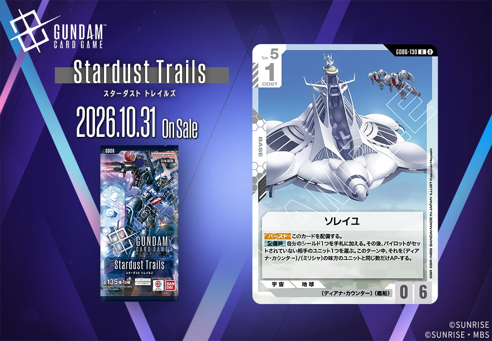
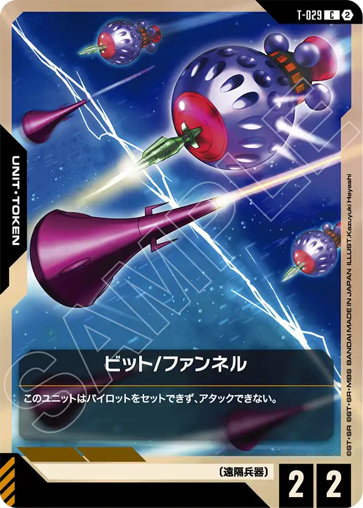
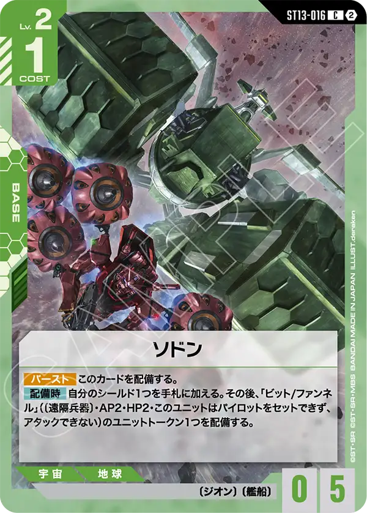
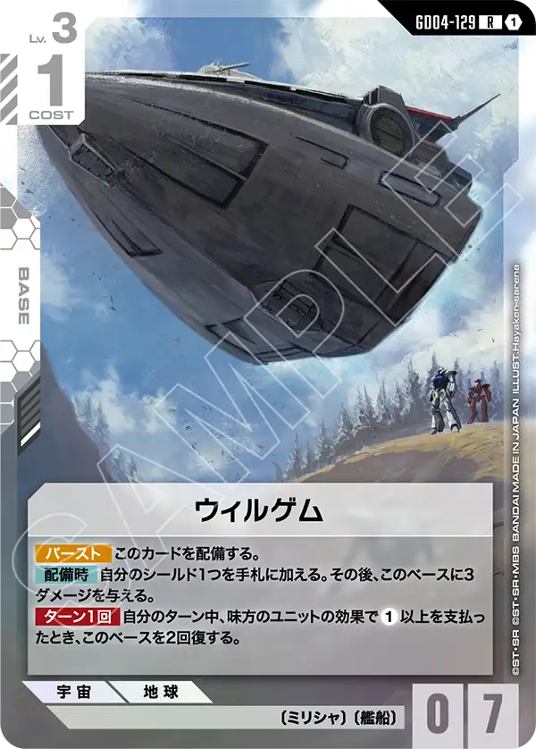

今回は3枚のカードを取り上げます。GD06「Phantom Aria」からは白のBASE「ソレイユ (GD06-130)」、ST13からは緑のBASE「ソドン (ST13-016)」、そしてT-029には青のUNIT「ビット/ファンネル」が収録されています。色もカードタイプも異なる構成となっており、それぞれの収録パックを横断して確認していきます。

ソレイユ (GD06-130)
| 色 | 白 | タイプ | BASE |
| Lv | 5 | コスト | 1 |
| AP | 0 | HP | 6 |
| 特徴 | 〔ディアナ・カウンター〕、〔艦船〕 | ||
効果: 【バースト】このカードを配備する。【配備時】自分のシールド1つを手札に加える。その後、パイロットがセットされていない相手のユニット1つを選ぶ。このターン中、それを〔ディアナ・カウンター〕/〔ミリシャ〕の味方のユニットと同じ数だけAP-する。
ソレイユ(GD06-130)はCOST1・HP6のベースで、【バースト】での配備と【配備時】のシールド回収は他の白系艦船と共通の枠組みを持つ。加えて、パイロットがセットされていない相手ユニット1つを〔ディアナ・カウンター〕/〔ミリシャ〕の味方ユニット数だけAP-する点が独自で、味方を横に並べるほど相手の攻撃力を大きく削れる。 対象がパイロット非搭載に限られるため、盤面状況に依存しやすい点は留意したい。

ビット/ファンネル (T-029)
| 色 | 青 | タイプ | UNIT |
| Lv | - | コスト | 2 |
| AP | 2 | HP | 2 |
| 特徴 | 〔遠隔兵器〕 | ||
効果: このユニットはパイロットをセットできず、アタックできない。
COST2でAP2/HP2ながら、パイロットをセットできずアタックもできないという極めて特殊なユニット。攻めに使えないため、自らアタックする役割ではなく、《ブロッカー》等を持たない純粋な壁や、他カードの効果対象・数合わせとしての運用が主眼になる。単体性能ではなく盤面上に〔遠隔兵器〕のユニットを1体確保できる点をどう活かすかが評価の分かれ目となる。

ソドン (ST13-016)
| 色 | 緑 | タイプ | BASE |
| Lv | 2 | コスト | 1 |
| AP | 0 | HP | 5 |
| 特徴 | 〔ジオン〕、〔艦船〕 | ||
効果: 【バースト】このカードを配備する。【配備時】自分のシールド1つを手札に加える。その後、「ビット/ファンネル」(〔遠隔兵器〕・AP2・HP2・このユニットはパイロットをセットできず、アタックできない)のユニットトークン1つを配備する。
ソドンはCOST1・HP5と軽量ながら、【配備時】でシールド1枚を手札に回収しつつ、AP2/HP2の「ビット/ファンネル」トークンを1つ配備できるベースで、盤面と手札を同時に補える点が扱いやすい。トークンはパイロットセット不可・アタック不可の遠隔兵器のため純粋な壁役だが、【バースト】でシールドから配備できるため受け札としても機能する。同じシールド回収を持つ艦船のアーガマ(GD02-129)やアークエンジェル(ST04-015)と比べ、トークン展開分だけ即時の盤面貢献が大きいのが特徴だ。

関連カード
-
 アーガマ(GD02-129)白系デッキ内採用率4.5% (211デッキ)
アーガマ(GD02-129)白系デッキ内採用率4.5% (211デッキ) -
 アークエンジェル(ST04-015)白系デッキ内採用率3.1% (146デッキ)
アークエンジェル(ST04-015)白系デッキ内採用率3.1% (146デッキ) -
 クサナギ(GD01-129)白系デッキ内採用率0.4% (20デッキ)
クサナギ(GD01-129)白系デッキ内採用率0.4% (20デッキ) -

ウィルゲム(GD04-129)白系デッキ内採用率0.1% (5デッキ) -
 アムロ・レイ(ST01-010)青系デッキ内採用率54% (2539デッキ)
アムロ・レイ(ST01-010)青系デッキ内採用率54% (2539デッキ) -
 ガンダム(ST01-001)青系デッキ内採用率52.4% (2467デッキ)
ガンダム(ST01-001)青系デッキ内採用率52.4% (2467デッキ) -
 覚悟の表れ(GD01-100)青系デッキ内採用率51% (2401デッキ)
覚悟の表れ(GD01-100)青系デッキ内採用率51% (2401デッキ) -
 コルシカ基地(ST02-016)青系デッキ内採用率38.6% (1815デッキ)
コルシカ基地(ST02-016)青系デッキ内採用率38.6% (1815デッキ) -
 ガンタンク(GD01-008)青系デッキ内採用率38.1% (1790デッキ)
ガンタンク(GD01-008)青系デッキ内採用率38.1% (1790デッキ) -
 ザクⅡ(ST03-008)緑系デッキ内採用率19.1% (898デッキ)
ザクⅡ(ST03-008)緑系デッキ内採用率19.1% (898デッキ)